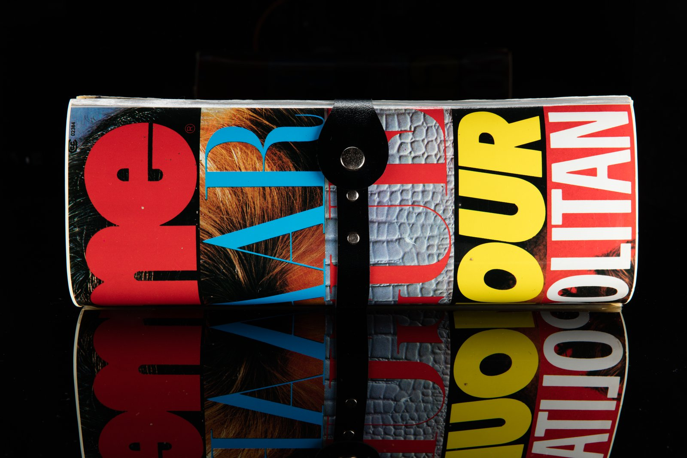
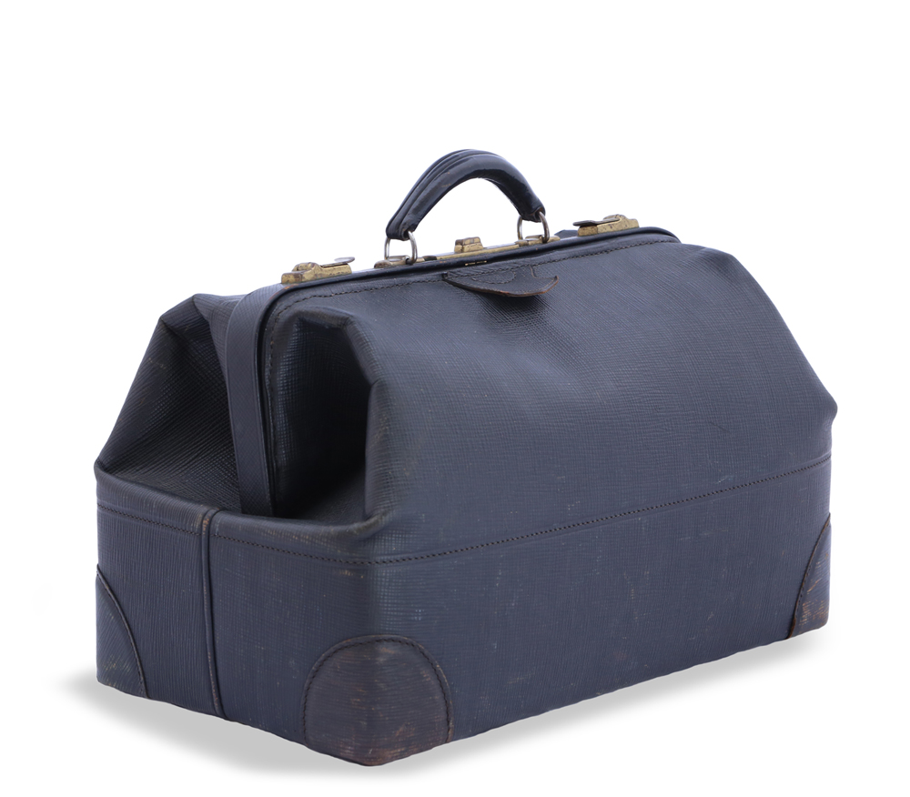

Bespoke Totes & Heirloom Carryalls
Individually bench-crafted carryalls tailored in our SoHo atelier, each featuring premium alpine shearling, hand-stitched vachetta harness handles, and solid brass appointments.

Atelier EditionThe Mercer Grand Carryall Tote
Our signature oversized everyday carryall, featuring full-grain caramel suede exterior, cloudlike curly sheepskin rim collar, and interior Belgian linen lining with zippered security compartments.
- Dimensions: 42cm W × 34cm H × 18cm D.
- 26cm handle drop fits comfortably over heavy winter coats.
- Solid brass key carabiner lanyard and slip phone sleeve.
The Alpine Crossbody Shoulder Tote
A medium structured silhouette equipped with rolled grab handles and a detachable bridle leather shoulder strap, allowing hands-free crossbody versatility for active travel.
- Dimensions: 32cm W × 26cm H × 14cm D.
- Adjustable 7-hole bridle strap with hand-cast brass buckle.
- Reinforced leather base with five solid brass protective feet.

Voyage CarryallThe Nordic Weekender Voyage Tote
Built for mountain retreats and transatlantic journeys, this expansive travel tote combines ultra-dense winter shearling with reinforced corner braces and twin zip sliders.
- Dimensions: 52cm W × 38cm H × 24cm D.
- Complies with commercial airline overhead cabin luggage sizes.
- Dual padded leather shoulder harness handles for heavy loads.
Private Commissions & Custom Dimensions
For patrons requiring bespoke adjustments, our atelier offers fully personalized commission appointments. Choose between short-cropped ironed shearling or high-loft rustic fleece.
Select custom thread colors, specify interior compartment arrangements for specific laptops, and deboss your family crest or personal monogram in 24-karat gold leaf.